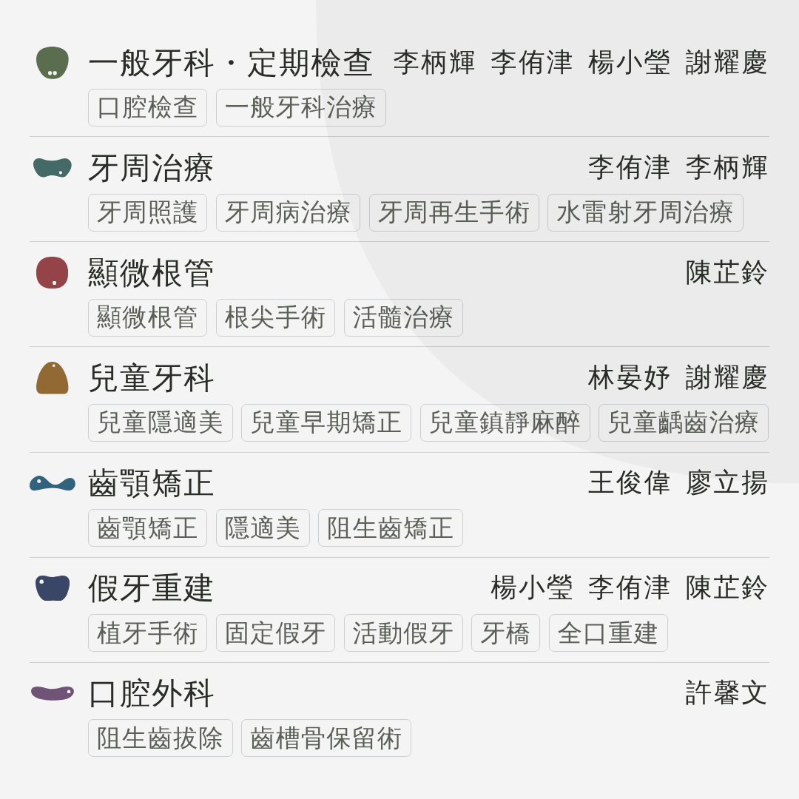
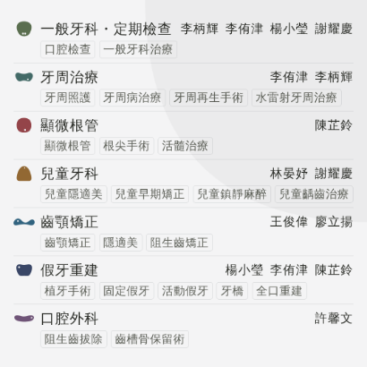
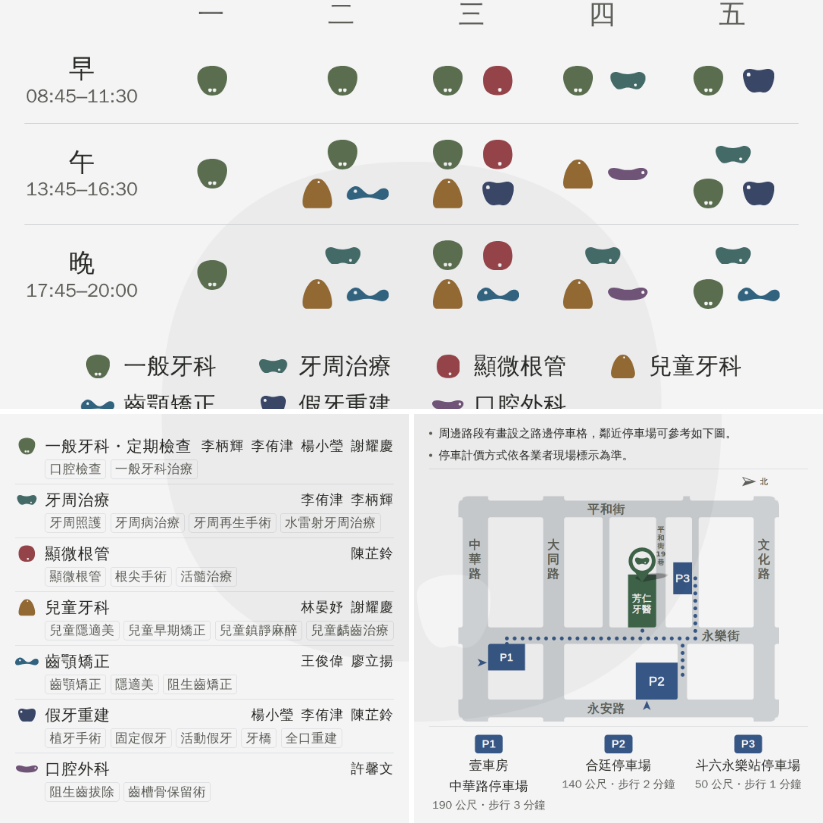
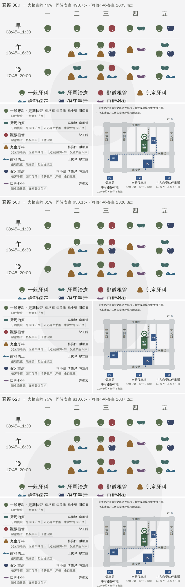

主頁「最新貼文」那三格的小格右。
要貼的是 fangren-docs-1080.png（1080×1080・PNG），
「詳情」那一欄照下面那一份貼，不要重打。

一科一列。第一行 圖案＋科別＋醫師，第二行 治療項目。
治療項目不套色（字柔墨、框站上的格線色）——整張圖的彩色只剩最左邊那顆圖案，
而那一顆是圖例、要對得上門診表那一張，所以它不能跟著淡化。
九位醫師同一階墨。誰是本科的仍然看得出來 ——本科的排前面。
⚠ 內容高 994／1000，上下只剩 3px ＝ 這一版的盡頭。

科別 15.7px・醫師 13.5・治療項目 12.7
（這一線的地板是 10px）。
⚠⚠⚠ 再放大是「寬度」擋住的，不是高度：每一列的圖案、科別名、醫師名擠在同一行、
都不折行，最寬的那一列（一般牙科・定期檢查，四位醫師）已經要 992px、
可用 1000px。拿掉標題空出來的是上下，那一塊給了列距。
⚠ 走過的四格（現在這樣／只放大／放大＋列距／只拉開列距）留在
drafts/channels/README.md 第 36-15 節與 git，要回頭比從那裡取。

⚠⚠⚠ 那顆浮水印現在是一顆圓，騎在三格中間的十字縫上：
大格看到上半、左下看到左下那一象限、右下看到右下那一象限。
三格的幾何只有一個出處 drafts/channels/wm-triptych.mjs，
三支產生器都從它拿位置與大小。
⚠⚠ 濃度三格統一 4%（門診表那張本來是 5%）——現在是同一個物件，
一深一淺會在縫上看得出來。
⚠⚠⚠ 同一個 px 在三格上不一樣大：大格是 823÷1080 ＝ 0.762 縮的、
小格是 409÷1080 ＝ 0.379，差 2.012 倍。所以三張都畫同一個寬度會變成
「一顆大的配兩顆小的」，接不成一顆 ——兩個小格在原圖上要畫成兩倍大。
⚠ 順序要在後台排好：門診表在最上面那一格。你那張截圖裡現在是科別醫師在大格。

由上到下 380（大格寬的 46%）／500（61%，現在這樣）／
620（75%）。單位是「三格合起來」那個座標系，大格寬 823。
⚠ 換直徑要三張一起重跑（node drafts/channels/post-triptych.mjs），
只改一張的話拼起來是三段對不上的弧。
| 這一列 | 本科的醫師 | 跨科（專長命中） |
|---|---|---|
| 一般牙科・定期檢查 | 李柄輝 | 李侑津 楊小瑩 謝耀慶 |
| 牙周治療 | 李侑津 | 李柄輝 |
| 顯微根管 | 陳芷鈴 | — |
| 兒童牙科 | 林晏妤 謝耀慶 | — |
| 齒顎矯正 | 王俊偉 廖立揚 | — |
| 假牙重建 | 楊小瑩 | 李侑津 陳芷鈴 |
| 口腔外科 | 許馨文 | — |
紅色那 6 個名字改動前一個都沒有出現。
舉例：李侑津的「植牙手術・固定假牙・活動假牙」本來就印在假牙重建那一列，
但那一列只掛楊小瑩；李柄輝的「牙周照護」印在牙周那一列，只掛李侑津。
⚠ 順序改成本科的排前面（站上一個人只出現在一張卡上，所以卡序從來不必回答
「誰排前面」；補進跨科的之後它才開始說話）。
⚠⚠ 七條科別網址由這一欄接——圖上放不下七個入口，
但「詳情」放得下，而且點得下去。照這一份貼，不要重打。
⚠⚠⚠ 第一行「9 位醫師駐診・6 個部定專科」刻意留著：圖上不寫之後，
這張圖已經沒有一個地方講得出診所有多少人，而「詳情」正是接這種事的地方。
要不要一起拿掉，是你的決定——沒有自己動。
產生器 node drafts/channels/post-docs.mjs
守門 node drafts/channels/check-post-docs.mjs
推導在 drafts/channels/README.md 第三十六節。